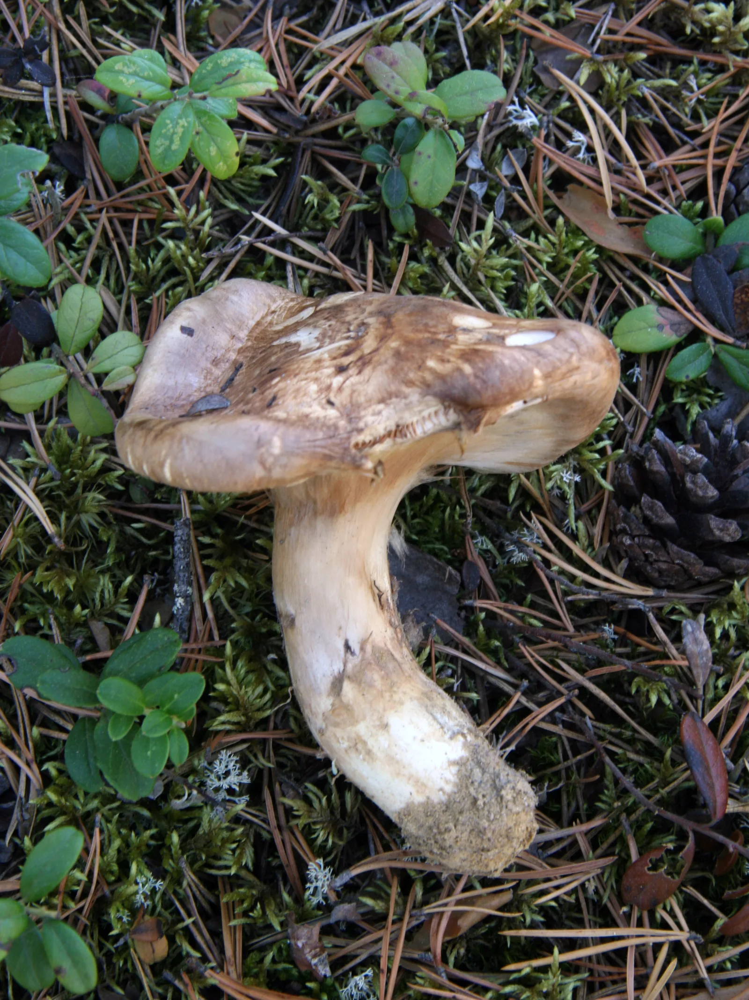
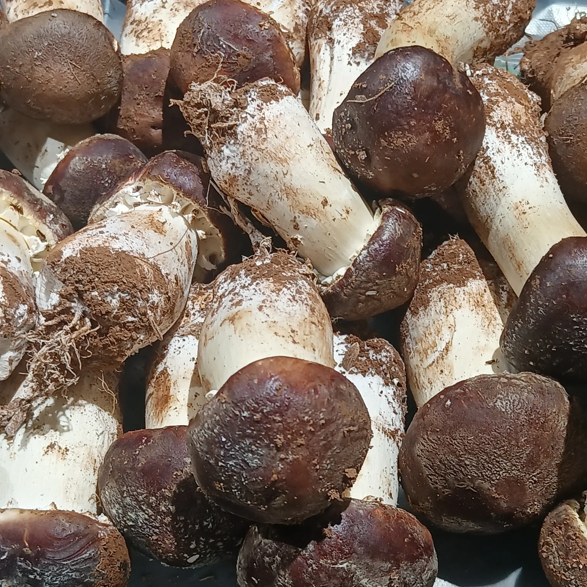
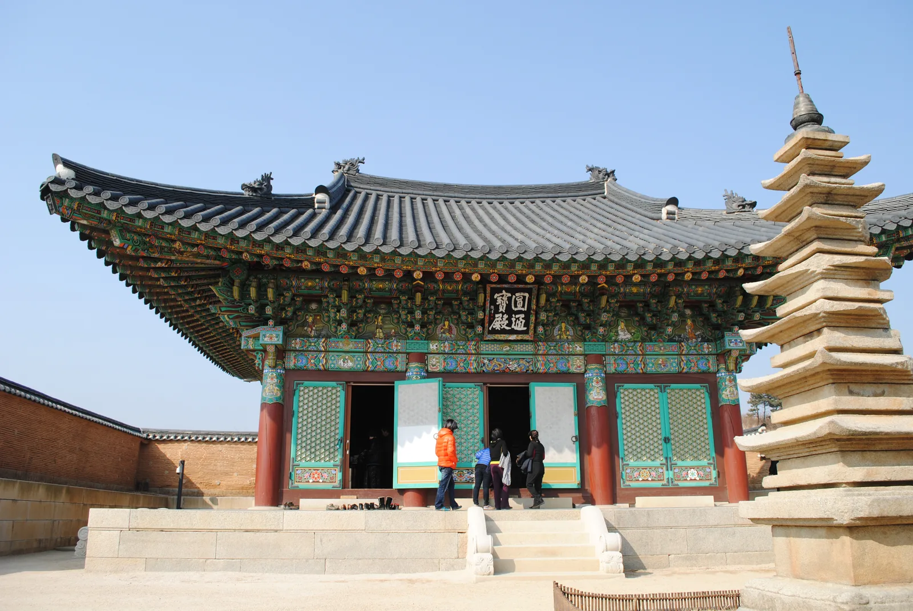
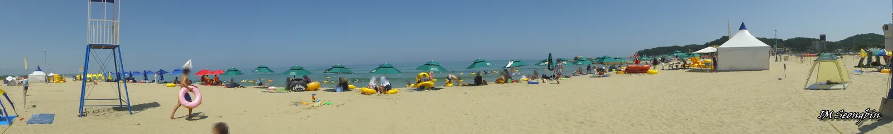
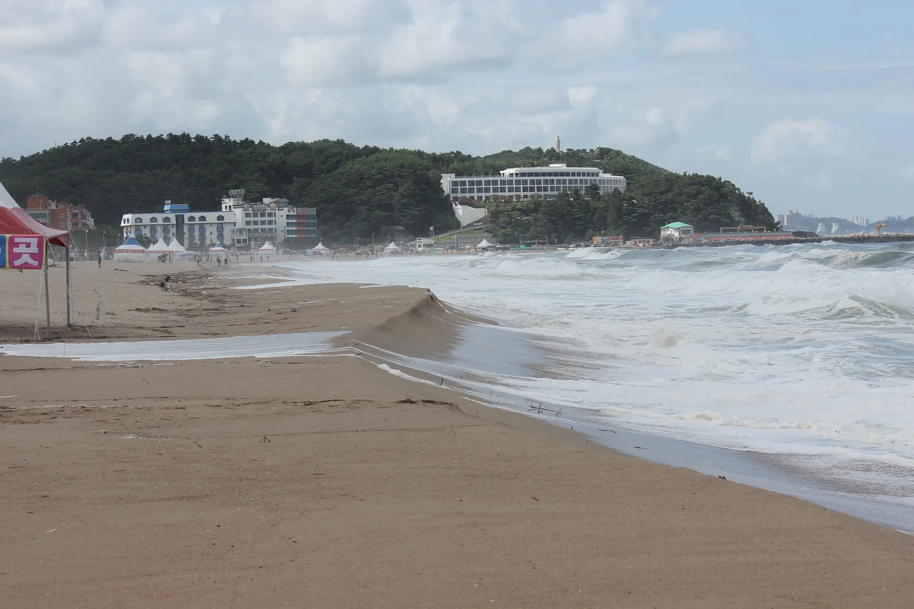

▲ 낙산사 의상대. 해안 절벽을 뒤덮은 소나무 숲은 양양이 송이 산지로 꼽히는 이유와도 맞닿아 있다
강원 양양은 매년 가을 전국 미식가들의 시선이 쏠리는 곳이다. 추석이 지나고 보름 남짓, 짧게는 한 달 남짓 열리는 송이버섯 제철 동안 이 작은 산골 동네의 경매장에는 1kg에 100만 원을 훌쩍 넘는 낙찰가가 매년 화제가 된다. 2006년 산림청 지리적표시 임산물 제1호로 지정될 만큼 품질을 인정받은 '양양송이'는 왜 유독 이 지역에서 유명해졌을까. 언제 가야 좋은 물건을 만날 수 있고, 무엇을 먹고, 어디를 더 들르면 좋을지 방문 순서대로 정리했다.
1. 왜 하필 양양산인가 — 소나무·화강암 토양·기후가 만드는 향

▲ 송이는 살아있는 소나무 뿌리와 공생하는 균근균이라 인공 재배가 불가능하다. 사진은 소나무 숲 바닥에서 갓 올라온 자연산 송이 ⓒ Wikimedia Commons
송이버섯은 아직 인공 재배가 불가능한 몇 안 되는 버섯이다. 살아있는 소나무(특히 적송) 뿌리와 공생하는 균근균이기 때문에, 사람이 씨를 뿌려 키울 수 없고 오직 조건이 맞는 자연림에서만 자란다. 양양은 명주사·미천골 등 설악산·오대산 자락으로 이어지는 노령의 적송림이 넓게 분포하고, 화강암이 오랜 세월 풍화되며 만들어진 배수 좋은 산성 토양이 소나무 뿌리 발달에 유리한 조건을 만든다. 여기에 동해와 가까워 낮과 밤의 기온차가 크고 초가을 서늘한 기후가 겹치면서, 송이균이 버섯을 맺기 좋은 환경이 갖춰진다. 이런 조건이 겹친 결과 양양송이는 수분 함량이 적어 육질이 단단하고 향이 진한 것이 특징으로, 2006년 산림청으로부터 지리적표시 임산물 제1호로 지정됐다.
2. 제철 시기와 등급·가격 — 2026년 첫 공판 시세
양양송이의 제철은 추석 이후부터 보름 남짓, 통상 9월 중순부터 10월 초까지로 매우 짧다. 2026년에는 양양송이영농조합법인과 양양속초산림조합이 9월 17일 오전 9시부터 산지 채취 송이 수매를 시작해 오후 4시 30분 첫 공개경쟁입찰을 진행했다. 등급은 크기·모양·품질 상태에 따라 1등품부터 4등품, 등외품까지 총 5단계로 나뉘며, 지난해 첫 공판에서는 1등품이 1kg당 113만 7,700원에 낙찰됐고 최고가는 161만 1,200원까지 치솟았다. 반대로 등외품은 15만 원대에서 거래되는 등 등급에 따른 가격 편차가 크다. 능이·꾀꼬리버섯 같은 다른 임산물도 함께 수매·경매되는 만큼, 같은 날 함께 방문하면 비교해 볼 수 있는 물건이 많다.
| 등급 | 낙찰가 | 비고 |
|---|---|---|
| 1등품 | 113만 7,700원 | 당일 평균 낙찰가 |
| 1등품 최고가 | 161만 1,200원 | 당일 최고 낙찰 기록 |
| 1등품 최저가 | 48만 7,700원 | 같은 등급 내 편차 |
| 등외품 | 15만 5,100원 | 등급 최하위 |
가격은 그해 강수량과 기온에 따라 작황이 크게 달라지므로 매년 큰 폭으로 변동한다. 방문 전 시세를 확인하고 싶다면 산림조합중앙회의 실시간 공판 현황 페이지나 팜모닝 같은 경매 시세 서비스를 참고하는 것이 도움이 된다.
3. 경매장·전통시장에서 구매하는 법

▲ 수확한 지 얼마 안 된 송이는 밑동에 흙이 묻어 있고 향이 진하다. 경매장에서는 등급별로 이런 상태 그대로 선별해 낙찰한다 ⓒ Wikimedia Commons
공식 경매는 양양속초산림조합 지하 공판장에서 열린다. 다만 이곳은 채취농가와 중도매인 간 도매 경매가 이뤄지는 곳으로, 일반 관광객이 직접 낙찰받아 구매하는 구조는 아니다. 대신 경매가 열리는 시간대에 방문하면 산더미처럼 쌓인 자연산 송이가 등급별로 선별되는 현장 분위기를 참관할 수 있어, 산지 여행의 백미로 꼽힌다. 실제 구매는 두 가지 경로가 일반적이다. 하나는 양양전통시장으로, 매달 4일과 9일에 서는 5일장에 인근 농가가 그날 채취한 송이를 직접 들고 나와 좌판에서 판매한다. 시세보다 저렴하게 살 수 있는 대신 물량이 일정하지 않다. 다른 하나는 산림조합이나 인근 농가에서 운영하는 직판장으로, 등급별 소포장 상품을 살 수 있어 선물용으로도 무난하다. 가을철 짧게 열리는 양양송이연어축제 기간에는 축제장 안에서도 당일 채취한 송이를 직접 구매할 수 있는 판매 부스가 마련된다.
2026 양양송이연어축제 소식 확인 가능2026년 양양송이연어축제는 10월 16일부터 18일까지 양양 남대천 둔치 일원에서 '청정자연이 차린 가장 깊은 식탁'을 슬로건으로 열릴 예정이다. 송이 직거래 판매는 물론 시식·요리 체험 프로그램도 함께 운영되는 만큼, 첫 구매라면 경매장 참관보다 축제 기간 방문이 접근성이 좋다.
4. 송이 미식 코스 — 전골부터 백숙까지
양양에서는 송이를 활용한 코스 요리를 파는 식당이 여럿 있다. 손양면 일대의 송이골은 송이돌솥정식(2만 원대), 송이전골(3만 원대), 능이백숙(8만 원대) 등을 갖추고 있어 혼자든 여럿이든 부담 없이 들르기 좋다. 송이버섯마을은 자연산 송이를 듬뿍 넣은 버섯전골로 알려져 있으며, 진한 송이 향을 우려낸 육수에 칼국수를 곁들이는 방식이 인기다. 쏠비치 리조트 내 한식당 '송이'처럼 숙박과 연계해 코스 요리로 즐길 수 있는 곳도 있다. 다만 자연산 송이는 시세에 따라 요리 가격이 수시로 바뀌는 편이라, 방문 전 전화로 당일 가격을 확인하는 것이 안전하다.
5. 양양 연계 여행 코스 — 낙산사·하조대·서핑비치

▲ 관동팔경으로 꼽히는 낙산사 원통보전. 동해를 마주한 절벽 위 해수관음상, 홍련암과 함께 대표 코스로 묶인다 ⓒ Wikimedia Commons
송이 산지 여행만으로 하루를 다 채우긴 아쉬운 만큼, 양양 안에서 함께 묶기 좋은 명소가 많다. 낙산사는 관동팔경 중 하나로 꼽히는 천년 고찰로, 동해 바다를 마주한 절벽 위 해수관음상과 홍련암, 소나무 숲 절벽 정자인 의상대가 대표 포토스팟이다. 차로 20~30분 거리의 하조대는 기암절벽과 정자, 등대가 어우러진 곳으로 일출 명소로도 유명하며, 바로 옆 하조대해수욕장은 여름 물놀이는 물론 가을에도 산책하기 좋다.

▲ 하조대해수욕장. 기암절벽 하조대 바로 옆에 자리해 절경과 해변을 함께 즐길 수 있다 ⓒ Wikimedia Commons
서울-양양고속도로 개통 이후 서울에서 2시간 안팎이면 닿을 수 있게 되면서, 양양은 부산 송정·제주 중문과 함께 국내 3대 서핑 명소로 꼽히게 됐다. 하조대 바로 북쪽의 서피비치는 국내 최초로 서핑객 전용으로 지정된 해변으로, 서핑스쿨과 보드 대여, 해변 바가 한데 모여 있다. '고고양양' 앱을 이용하면 양양 내 13개 해변의 실시간 파도 상황과 서핑숍 정보를 확인할 수 있어 초행길에도 유용하다. 가을 성수기에는 낮에 서핑을 즐기고 저녁에는 해변 카페나 바에서 오션뷰를 감상하는 일정이 흔하다.

▲ 낙산해수욕장. 언덕 위로 낙산사 해수관음상이 보여, 해변과 사찰을 한 프레임에 담을 수 있다 ⓒ Wikimedia Commons
✅ 양양 송이 미식여행, 가기 전 체크리스트
· 양양송이는 2006년 산림청 지리적표시 임산물 제1호, 소나무 공생균이라 인공 재배 불가
· 제철은 추석 이후 보름 남짓, 2026년 첫 공판은 9월 17일 시작
· 등급은 1등품~4등품·등외품 5단계, 지난해 1등품 1kg 평균 113만 원대 낙찰
· 일반 구매는 양양전통시장(매달 4·9일 5일장) 또는 산림조합·농가 직판장 이용
· 2026 양양송이연어축제는 10월 16~18일 남대천 둔치에서 개최
· 송이골·송이버섯마을 등에서 송이전골·백숙 코스 요리 가능
· 낙산사·하조대·서피비치를 연계하면 하루 이상 일정으로 확장 가능
· 서울-양양고속도로로 서울에서 약 2시간 소요